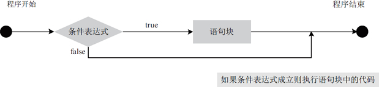
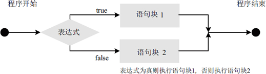
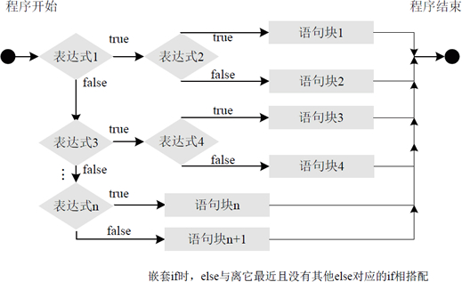

首页 > Java教程 > Java流程控制语句
Java if else分支结构精讲
Java 支持两种选择语句：if 语句和 switch 语句。其中 if 语句使用布尔表达式或布尔值作为分支条件来进行分支控制，而 switch 语句则用于对多个整型值进行匹配，从而实现分支控制。这些语句允许你只有在程序运行时才能知道其状态的情况下，控制程序的执行过程。如果你没有 C/C++ 的编程背景，你将会为这两个语句的强大功能和灵活性而感到吃惊。
选择结构（也叫分支结构）解决了顺序结构不能判断的缺点，可以根据一个条件判断执行哪些语句块。选择结构适合于带有逻辑或关系比较等条件判断的计算。例如，判断是否到下班时间，判断两个数的大小等。
由于篇幅有限，本节主要介绍 if 语句的各种形式和用法。关于 switch 语句的用法我们会在《Java switch case》一节中讲解。
if 选择结构是根据条件判断之后再做处理的一种语法结构。默认情况下，if 语句控制着下方紧跟的一条语句的执行。不过，通过语句块，if 语句可以控制多个语句。
if 语句的最简语法格式如下，表示“如果满足某种条件，就进行某种处理”。
if 条件语句的运行流程如图 1 所示。
实现代码如下：
使用 if…else 语句的语法格式如下所示：
通常表现为“如果满足某种条件，就进行某种处理，否则如果满足另一种条件才执行另一种处理……，这些条件都不满足则执行最后一种条件”。
if…else if 多分支语句的语法格式如下所示：
在使用 if…else if 语句时，依次判断表达式的值，当某个分支的条件表达式的值为 true 时，则执行该分支对应的语句块，然后跳到整个 if 语句之外继续执行程序。如果所有的表达式均为 false，则执行语句块 n+1，然后继续执行后续程序，其运行流程如图 3 所示。

图3 if…else if 语句的执行流程
程序运行后的输出效果如下所示：
嵌套 if 的语法格式如下：
选择结构（也叫分支结构）解决了顺序结构不能判断的缺点，可以根据一个条件判断执行哪些语句块。选择结构适合于带有逻辑或关系比较等条件判断的计算。例如，判断是否到下班时间，判断两个数的大小等。
由于篇幅有限，本节主要介绍 if 语句的各种形式和用法。关于 switch 语句的用法我们会在《Java switch case》一节中讲解。
if 结构
if 语句是使用最多的条件分支结构，它属于选择语句，也可以称为条件语句。if 选择结构是根据条件判断之后再做处理的一种语法结构。默认情况下，if 语句控制着下方紧跟的一条语句的执行。不过，通过语句块，if 语句可以控制多个语句。
if 语句的最简语法格式如下，表示“如果满足某种条件，就进行某种处理”。
if (条件表达式) {
语句块;
}
其中“条件表达式”和“语句块”是比较重要的两个地方。-
条件表达式：条件表达式可以是任意一种逻辑表达式，最后返回的结果必须是一个布尔值。取值可以是一个单纯的布尔变量或常量，也可以是使用关系或布尔运算符的表达式。如果条件为真，那么执行语句块；如果条件为假，则语句块将被绕过而不被执行。 -
语句块：该语句块可以是一条语句也可以是多条语句。如果仅有一条语句，可省略条件语句中的大括号 {}。当从编程规范角度不要省略大括号，省略大括号会使程序的可读性变差。
if 条件语句的运行流程如图 1 所示。

图1 if 语句执行流程图
图1 if 语句执行流程图
例 1
编写一个 Java 程序，允许用户从键盘输入一个数字，再判断该数是否大于 100。使用 if 语句的实现代码如下：
public static void main(String[] args) {
System.out.println("请输入一个数字：");
Scanner input = new Scanner(System.in);
int num = input.nextInt(); // 接收键盘输入数据
// 判断用户输入的数据是否大于100
if (num > 100) {
System.out.println("输入的数字大于100");
}
// 判断用户输入的数据是否等于100
if (num == 100) {
System.out.println("输入的数字等于100");
}
// 判断用户输入的数据是否小于100
if (num < 100) {
System.out.println("输入的数字小于100");
}
}
运行该程序，分别使用键盘输入 99、100 和 105，结果如下所示：
请输入一个数字： 99 输入的数字小于100
请输入一个数字： 100 输入的数字等于100
请输入一个数字： 105 输入的数字大于100
例 2
假设有 num1 和 num2 两个变量，它们的值分别是 50 和 34。下面编写程序，要求使用 if 语句判断 num1 和 num2 的大小关系，并输出比较结果。实现代码如下：
public static void main(String[] args) {
int num1 = 50;
int num2 = 34;
if (num1 > num2) {
System.out.println("num1大于num2");
}
if (num1 == num2) {
System.out.println("num2等于num2");
}
if (num1 < num2) {
System.out.println("num1小于num2");
}
}
该段选择语句判断了 num1 值和 num2 值的大于、等于和小于关系。此处 num1 为 50，num2 为 34，所以执行后会输出“num1 大于 num2”。例 3
在上述两个案例代码中，由于每个 if 语句的语句块中只包含一条语句，所以省略了大括号。本实例在登录系统中要求用户名、密码和验证码都必须正确，否则将显示登录失败及错误提示。其中的语句块有多条语句，所以需要使用大括号。代码如下：
public static void main(String[] args) {
String username = "admin"; // 用户名
String userpass = "123456"; // 密码
String code = "0000"; // 验证码
if (username != "admin" && userpass != "123456" && code != "0000") {
System.out.println("登录失败！");
System.out.println("请检查输入的用户名、密码和验证码是否正确！");
}
}
在这里为 if 语句设置了一个复杂的复合表达式来验证登录条件。执行后的输出结果如下：
登录失败！ 请检查输入的用户名、密码和验证码是否正确！
if-else 结构
单 if 语句仅能在满足条件时使用，而无法执行任何其他操作（停止）。而结合 else 语句的 if 可以定义两个操作，此时的 if…else 语句表示“如果条件正确则执行一个操作，否则执行另一个操作”。使用 if…else 语句的语法格式如下所示：
if (表达式) {
语句块1;
} else {
语句块2;
}
在上述语法格式中，如果 if 关键字后面的表达式成立，那么就执行语句块 1，否则的话则执行语句块 2，其运行流程如图 2 所示。

图2 if…else 运行流程
图2 if…else 运行流程
例 4
在例 3 中为实现比较 num1 和 num2 的大小，使用了 3 个 if 条件语句分别判断大于、等于和小于的情况。下面使用 if…else 双条件来实现，具体代码如下：
public static void main(String[] args) {
int num1 = 50;
int num2 = 34;
// 如果num1等于num2
if (num1 == num2) {
System.out.println("num1等于num2");
}
// 如果num1大于num2
if (num1 > num2) {
System.out.println("num1大于num2");
} else {
// 否则就是num1小于num2
System.out.println("num1小于num2");
}
}
双条件语句减少了代码的编写量，同时增强了程序的可读性。简化后的结果还是一样，执行后会输出“num1 大于 num2”。
多条件 if-else-if 语句
if 语句的主要功能是给程序提供一个分支。然而，有时候程序中仅仅多一个分支是远远不够的，甚至有时候程序的分支会很复杂，这就需要使用多分支的 if…else if 语句。通常表现为“如果满足某种条件，就进行某种处理，否则如果满足另一种条件才执行另一种处理……，这些条件都不满足则执行最后一种条件”。
if…else if 多分支语句的语法格式如下所示：
if(表达式1) {
语句块1;
} else if(表达式2) {
语句块2;
...
} else if(表达式n) {
语句块n;
} else {
语句块n+1;
}
可以看出，else-if 结构实际上是 if-else 结构的多层嵌套。明显的特点就是在多个分支中只执行一个语句组，而其他分支都不执行，所以这种结构可以用于有多种判断结果的分支中。在使用 if…else if 语句时，依次判断表达式的值，当某个分支的条件表达式的值为 true 时，则执行该分支对应的语句块，然后跳到整个 if 语句之外继续执行程序。如果所有的表达式均为 false，则执行语句块 n+1，然后继续执行后续程序，其运行流程如图 3 所示。
图3 if…else if 语句的执行流程
例 5
同样以比较 num1 和 num2 的大小为例，使用 if…else if 多条件的实现代码如下：
public static void main(String[] args) {
int num1 = 50;
int num2 = 34;
if (num1 == num2) { // 如果num1等于num2
System.out.println("num1等于num2");
} else if (num1 > num2) { // 如果num1大于num2
System.out.println("num1大于num2");
} else { // 否则就是小于
System.out.println("num1小于num2");
}
}
如上述代码所示，num1 和 num2 不满足 if 语句的“num1==num2”条件，接着测试 else if 的“num1>num2”条件，满足该条件并输出“num1 大于 num2”。例 6
假设某学校对成绩的判断标准是：不低于 90，可以评为优秀；低于 90 但不低于 80，可以评为良好；低于 80 但不低于 60，可以评为中等；否则评为差。
public static void main(String[] args) {
System.out.println("请输入考试成绩：");
Scanner input = new Scanner(System.in);
int score = input.nextInt(); // 接收键盘输入数据
if (score >= 90) { // 考试成绩>=90
System.out.println("优秀");
} else if (score >= 80) { // 90>考试成绩>=80
System.out.println("良好");
} else if (score >= 60) { // 80>考试成绩>=60
System.out.println("中等");
} else { // 考试成绩<60
System.out.println("差");
}
}
当考试成绩为 90 分以上时，则执行第一个 if 语句，下面的 3 个条件判断语句不会执行；当考试成绩为 80 分以上 90 分以下时，则执行第一个 else if 语句；当考试成绩在 60~80 分，并且包含 60 分的成绩，则执行第二个 else if 语句；如果上述 3 个条件都不满足，则执行 else 语句。程序运行后的输出效果如下所示：
请输入考试成绩： 100 优秀
请输入考试成绩： 88 良好
请输入考试成绩： 50 差
嵌套 if 的使用
if 语句的用法非常灵活，不仅可以单独使用，还可以在 if 语句里嵌套另一个 if 语句。同样，if…else 语句和 if…else if 语句中也可以嵌套另一个 if 结构的语句，以完成更深层次的判断。嵌套 if 的语法格式如下：
if(表达式1) {
if(表达式2) {
语句块1;
} else {
语句块2;
}
} else {
if(表达式3) {
语句块3;
} else if(表达式4) {
语句块4;
} else {
if(表达式n) {
语句块n;
} else {
语句块n+1;
}
}
}
在上述格式中，应该注意每一条 else 与离它最近且没有其他 else 对应的 if 相搭配，其执行流程如图 4 所示。

图4 嵌套 if 语句执行流程
图4 嵌套 if 语句执行流程
例 7
活动计划安排，如果今天是工作日，去上班；如果今天是周末，则出去游玩；同时，如果周末天气晴朗，去室外游乐场游玩，否则去室内游乐场游玩。实现代码如下：
public static void main(String[] args) {
String today = "周末";
String weather = "晴朗";
if (today.equals("周末")) {
if (weather.equals("晴朗")) {
System.out.println("去室外游乐场游玩");
} else {
System.out.println("去室内游乐场游玩");
}
} else {
System.out.println("去上班");
}
}
如上述代码所示，today 满足 if 语句的“today.equals("周末")”条件，接着测试 weather 是否满足“weather.equals("晴朗")”条件，满足该条件输出“去室外游乐场游玩”。关注公众号「站长严长生」，在手机上阅读所有教程，随时随地都能学习。内含一款搜索神器，免费下载全网书籍和视频。

微信扫码关注公众号